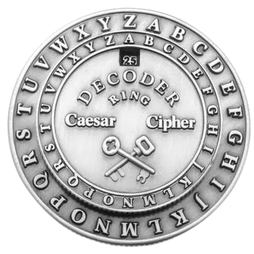
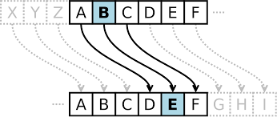

O que é Cifra de cesar?
Em criptografia, a Cifra de César, também conhecida como cifra de troca,
código de César ou troca de César, é uma das mais simples e conhecidas
técnicas de criptografia. É um tipo de cifra de substituição na qual cada
letra do texto é substituída por outra, que se apresenta no alfabeto
abaixo dela um número fixo de vezes. Por exemplo, com uma troca de três
posições, A seria substituído por D, B se tornaria E, e assim por diante.
O nome do método é em homenagem a Júlio César, que o usou parase comunicar
com os seus generais.  |